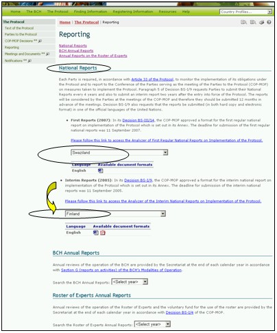
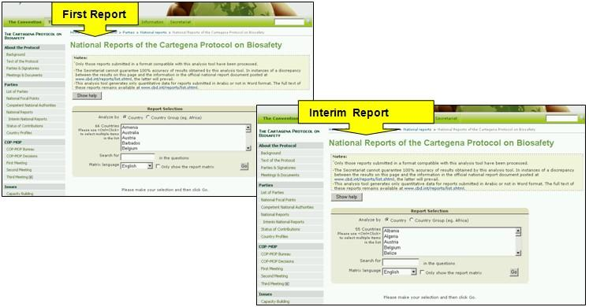
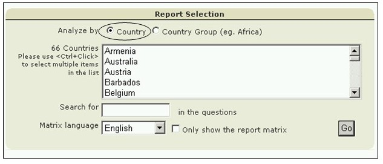
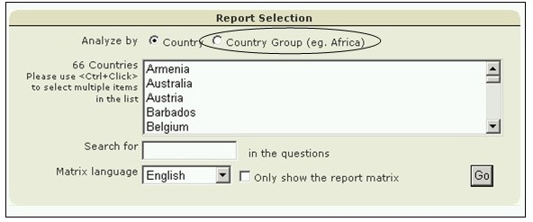

في قسم التقارير الوطنية في صفحة الإبلاغ، يمكن النفاذ إلى التقارير الوطنية الأوّلية والتقارير الوطنية المؤقتة باختيار بلد من قائمة الاختيارات المنسدلة في النص.

صورة 32
ويعرض هذا القسم أيضاً وصلات إلى تحليل للتقارير الوطنية والتقارير المؤقتة. وتسمح آلية البحث في صفحة التقارير الوطنية الخاصة ببروتوكول قرطاجنة للسلامة الإحيائية للمستعمل أن ينفذ إلى تحليلات البيانات المتأتية من التقارير القطرية الفردية أو من تقارير البلدان داخل مجموعات البلدان.

صورة 33
ويستطيع المستعمل أن ينقح البحث باستخدام كلمات معروفة في الأسئلة أو اختيار لغات المصفوفة المستعملة للتحليلات. واختيار زرار GO يستعيد نتائج البحث. وهذه تظهر مجدولة تحت آلية البحث.

صورة 34

صورة 35